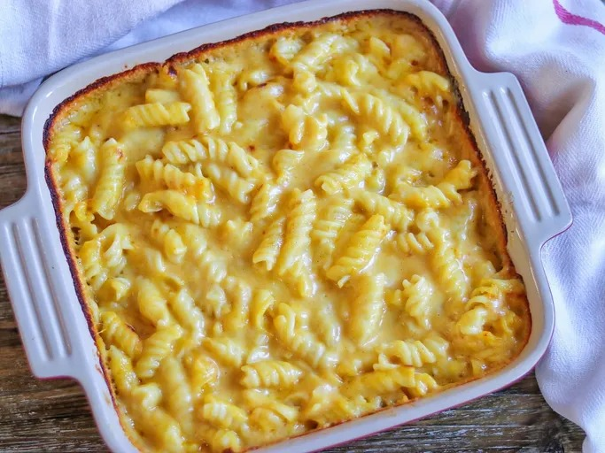

Home page
3 cheese pasta bake

Tender corkscrew pasta is cloaked in a creamy mushroom sauce sporting flavors of three cheeses.
Ingredients
- 1 Campbells condensed mushroom cream can
- 8 ounce shreeded two-cheese blend
- 1/3 cup graded parmesan cheese
- 1 cup milk
- 1/4 teaspoon grounded black pepper
- 4 cups cooked corkscrew-shaped pasta/li>
Directions
Step 1
Mix soup, cheeses, milk and black pepper in 1 1/2-qt. casserole. Stir in pasta.
Step 2
Bake at 400 degrees F. for 20 min. or until hot.
Home Page